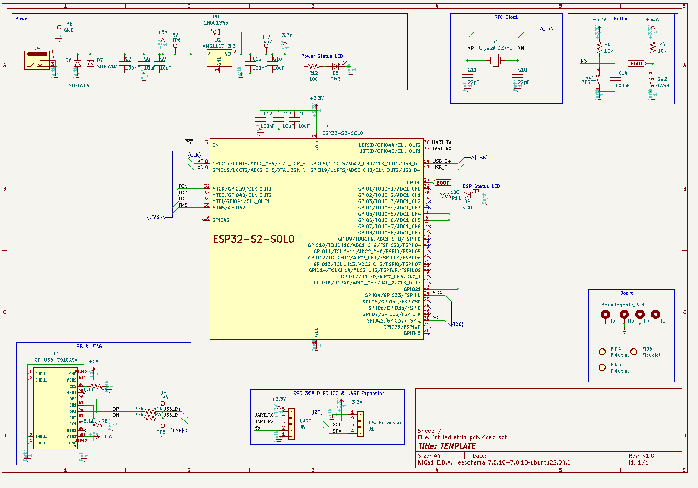

My template for the ESP32-S2-SOLO module, with my default components and footprints.
Includes USB-C, Power setup with caps, buttons, mounting holes, fiducials, and I2C expansion all already set up.

(c) 2024 Jacob Bokor jacobbokor.com